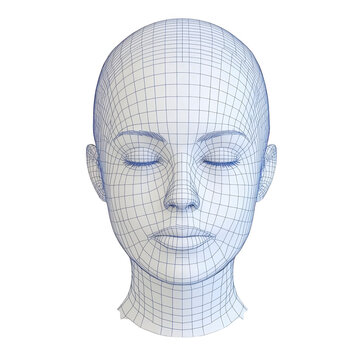
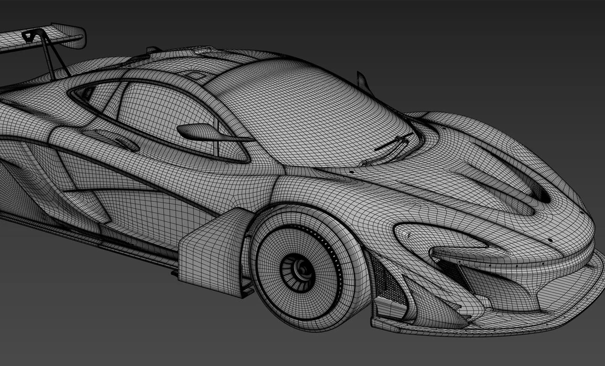
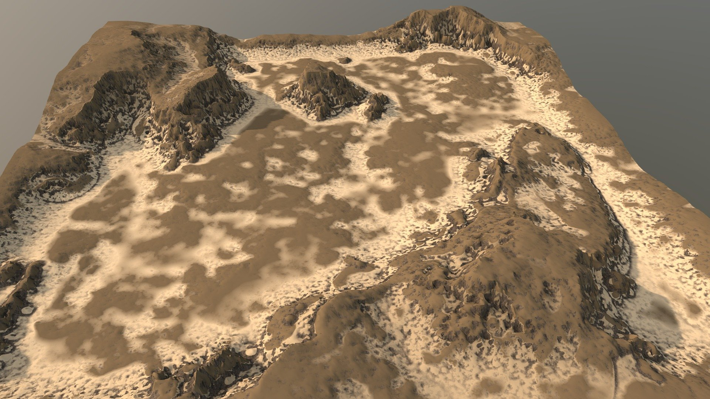
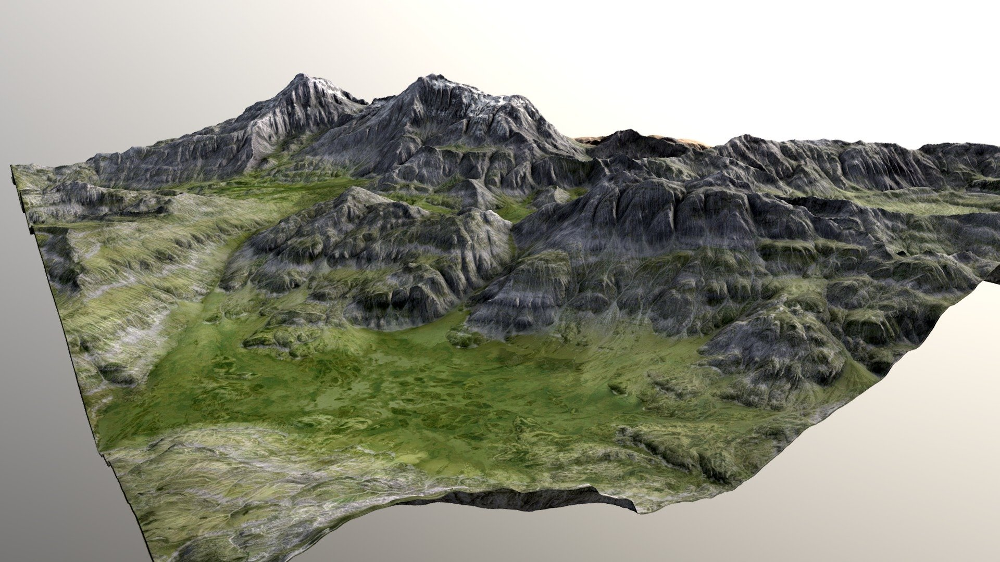

Autonomous Drone Video to Metrically Accurate 3D
Ingest single-pass UAV flight footage to synthesize dense point clouds, photorealistic PBR meshes, and georeferenced spatial twins with millimeter fidelity.




Explore Calibrated 3D Missions
Click any mission below to orbit, pan, inspect dense Gaussian splats, and test real-world 3D metric measurements directly in the viewport.

Tactical UAV Survey Alpha
CalibratedDense neural photogrammetry reconstruction from a linear low-altitude UAV flight pass with automatic parallax tracking.

Infrastructure & Facades
MetricSub-centimeter structural point cloud capturing building facades, geometry, and metric vertical elevation profiles.

Aerial Terrain & Elevation
Dense CloudComprehensive surface elevation reconstruction with global pose bundle adjustment and smooth Gaussian splats.
Engineered for Rapid Aerial Reconnaissance
Single-pass capture to millimeter digital twin without ground control points or complicated flight plans.
Single-Pass Video Ingestion
Simply upload continuous drone footage (.MP4 / .MOV). Client AI automatically filters high-speed motion blur and extracts optimal parallax keyframes.
3D Metric Ruler Tool
Click any two points in the 3D canvas on roofs, roads, or terrain to measure real-world distances and elevation changes with calibrated scale.
AI Subject Isolation
Optional deep neural background masking filters sky and distant moving clutter, allocating 100% of point cloud density to the subject.
Apple Silicon Metal MPS
Local GPU acceleration on Apple unified memory ensures ultra-fast convergence, zero cloud latency, and 100% private reconnaissance data.
Potential Operational Applications
Mission-critical deployment scenarios where single-pass 3D reconstruction provides an insurmountable tactical advantage.
Border & Strategic Mapping
Rapid single-pass border corridor reconnaissance, perimeter fortification modeling, and strategic terrain elevation analysis.
Disaster Damage Assessment
Emergency post-earthquake, flood, or cyclone flybys to quantify collapsed structures, blocked routes, and survivor access.
Urban Planning & Smart Cities
Synthesize high-fidelity 3D city models with accurate building facades, rooftop solar profiles, and line-of-sight analysis.
Critical Infrastructure Inspection
Single-pass inspection of transmission corridors, bridges, wind turbines, and pipeline easements with metric dimensions.
Construction Progress Monitoring
Track volumetric earthwork excavation, structural foundation progress, and contractor compliance against BIM blueprints.
Archaeological Documentation
Capture fragile heritage sites, historic ruins, and excavation trenches in millimeters before weather or intrusion affects them.
Digital Twin Generation
Export GLB/PLY models directly into Unreal Engine, Cesium, and GIS databases for live operational simulation.
Military Recon & Mission Planning
Single-pass tactical UAV flyovers providing frontline commanders with instant 3D urban terrain for ingress/egress planning.
How AEROVOX Works
Ingest Drone Pass
Fly a linear or orbital path with any drone. Drop the 1080p/4K video or aerial frames into the setup studio.
Neural Reconstruction
MUSt3R regressors solve camera intrinsics, trajectory splines, and dense point matching in seconds on local MPS.
Inspect & Measure
Freely orbit the 3D twin, measure metric dimensions, toggle splat densities, and export GLB/PLY models.
Ready to build your first 3D spatial twin?
Launch a new mission with your UAV footage or explore preloaded sample models immediately.
Single-Pass Drone Video to Metrically Accurate 3D
Generate georeferenced 3D terrain, infrastructure, building facades, and dense point clouds from a single UAV flight pass in seconds.
Drop Drone Flight Video or Aerial Photos here, or
AI automatically filters motion blur and extracts sharp parallax keyframes for neural reconstruction.
AI Subject Isolation & Background Masking
PRECISION BOOSTERAutomatically removes background clutter, sky, and moving objects to concentrate 100% of neural point density on the subject.